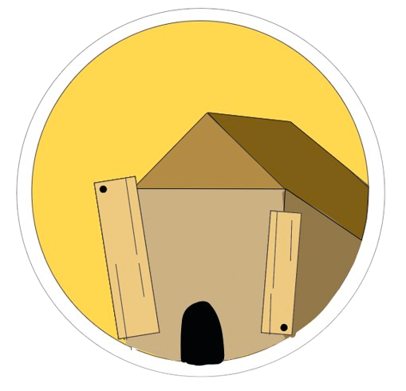
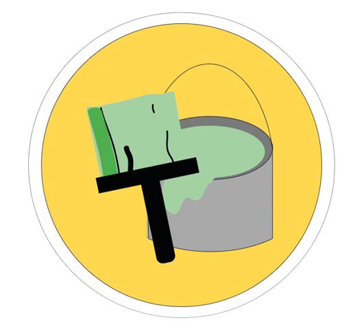
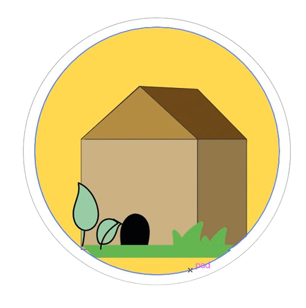

De opbouw

Oude loods
Het cafe Taverno is ontstaan uit een oude loods. Deze oude loods stond voor een lange tijd leeg en het werd tijd dat de loods weer gebruikt zal worden.
Renovatie
De lood stond dus leeg en daardoor heeft Taverno het gerenoveerd om er een cafe van te maken dat wel gebruikt gaat worden.
Resultaat
Nu ze het gerenoveerd hebben wordt de oude loods weer gebruikt en kunnen mensen een drankje nemen met wat eten en op speciale dagen zelfs muziek.


Duurzaamheid
Waarom is dit
duurzaam?
Je zult nu wel de vraag hebben, waarom is dit duurzaam? Dat zal ik hier uitleggen.
Ten eerste
is het duurzaam, omdat het gebouw niet gesloopt is. Dit is namelijk slecht voor het milieu, omdat bij het slopen van een gebouw er veel koolstofdioxide vrij komt.
Daarnaast
is het duurzaam, omdat er veel meubels, planken en nog andere dingen zijn blijven staan in de loods. Zo zijn de planken op het plafond hetzelfde gebleven en zijn de banken blijven staan. Dit is weer duurzaam, omdat er zo geen extra spullen en materialen gekocht hoeven te worden.